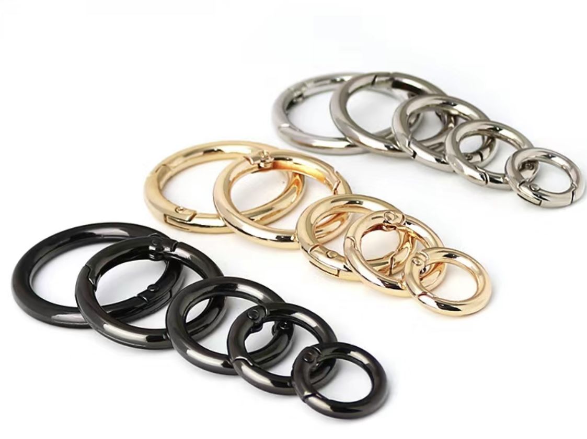
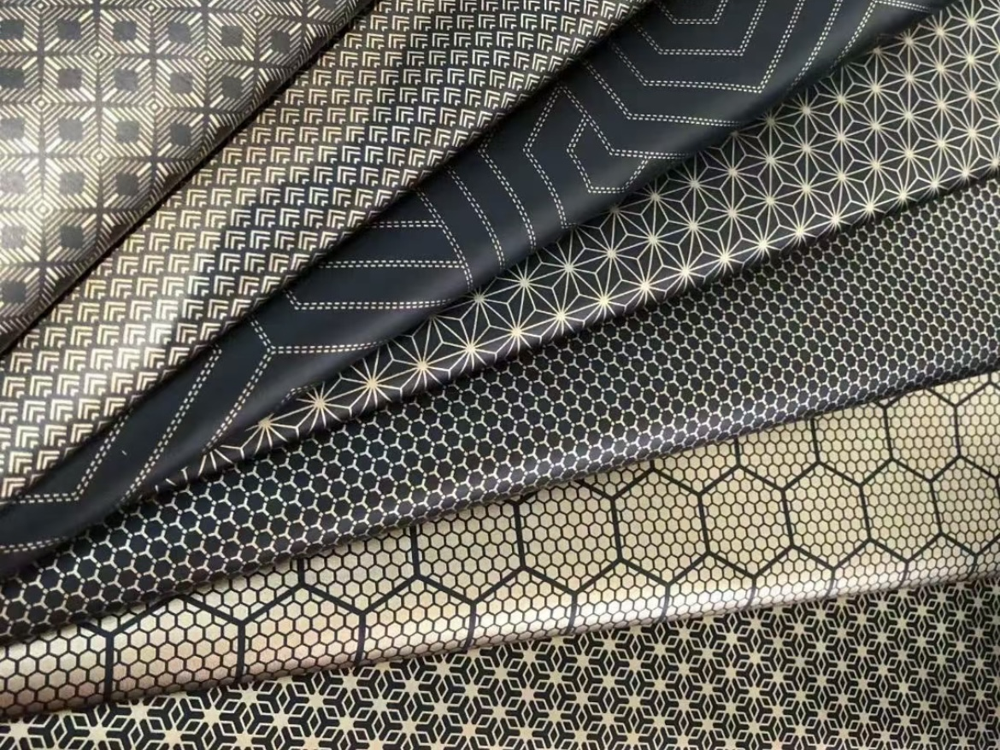
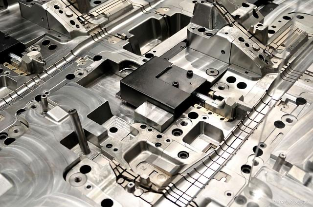
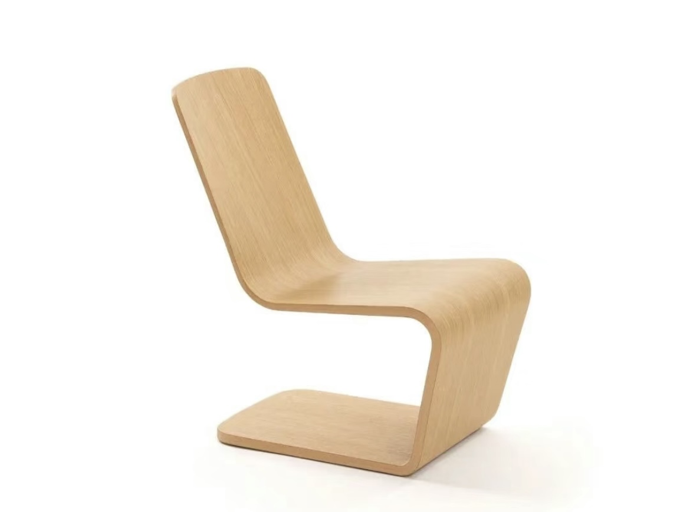

Metal spring buckles are widely used in various industries and fields due to their high strength, good elasticity, and simple structure
Clothing field: Used to connect and fix various parts of clothing, such as buttons, zipper heads, shoulder straps, etc.
Luggage, shoes and hats: used to fix and decorate various parts of products.
Outdoor sports equipment: Although iron spring buckles are prone to rusting, they are still used in some outdoor equipment that does not require high durability.
Furniture, automotive and other fields: Stainless steel spring buckles are favored for their corrosion resistance and durability.

plastic
Plastic fresh-keeping box is a widely used storage tool, mainly used for storing and preserving food.
Main material: The plastic fresh-keeping box is mainly made of PP (polypropylene) material. PP is a colorless, non-toxic, and odorless semi transparent solid substance, which is a common material for making fresh-keeping boxes.
Features: The advantage of PP material preservation boxes is that they have good heat resistance and can withstand high temperatures of around 110 degrees Celsius. Therefore, they can be placed in a microwave for short-term heating. But its transparency is average, hardness is also poor, and improper use can easily cause scratches.
composite
Wood plastic composite materials are a new type of composite materials that have flourished in recent years both domestically and internationally. They refer to the use of polyethylene, polypropylene, and polyvinyl chloride, instead of conventional resin adhesives, to mix with more than 50% of waste plant fibers such as wood powder, rice husks, and straw to form new wooden materials. These materials are then processed through plastic processing techniques such as extrusion, molding, injection/injection molding, to produce boards or profiles.
Main features:
Good processing performance; Good strength performance; Has water resistance and corrosion resistance, with a long service life; Excellent adjustable performance; Has UV light stability and good coloring properties.; Its biggest advantage is to turn waste into treasure, and it can be recycled and reproduced for free. It can be decomposed without causing "white pollution" and is a truly green and environmentally friendly product.; Widely sourced raw materials; It can be made into any shape and size as needed.
new materials
Graphene is a two-dimensional material formed by sp ² hybrid bonding of single-layer carbon atoms, with a single-layer hexagonal honeycomb lattice structure.
Structure: Graphene is an allotrope of carbon, and its unique single-layer structure gives it great surface area and high flexibility.
Physical properties: Graphene has high strength, high hardness, good conductivity and thermal conductivity, as well as excellent flexibility and transparency.
Chemical properties: Due to the single-layer structure of graphene, its chemical reactivity is much higher than that of three-dimensional materials of the same area.
Graphene fabric is made by adding a certain proportion of graphene fibers to textile fibers. Graphene fibers are composed of graphene monolayers stacked together, with a diameter of only a few tens of nanometers, thus possessing extremely high specific surface area and excellent physical properties.
Graphene fabric characteristics: high strength; Low density; Excellent conductivity and thermal conductivity; Flexibility; Waterproofing and chemical stability; Antibacterial performance

Self healing concrete is a new type of composite material that mimics the regeneration and recovery mechanism of animal bone tissue structure after trauma.
Principle: Self healing concrete contains dormant bacterial spores that can produce limestone and nutrients required for bacterial growth. When corrosive rainwater seeps into the concrete and acts on the structure, these bacterial spores are activated to start producing limestone and locally filling the cracked parts of the concrete.
Methods post processing for metal
Anodizing is the electrochemical oxidation of metals or alloys, in which aluminum and its alloys form an oxide film on aluminum products (anodes) under specific electrolyte and process conditions through the action of an applied current.
Process principle
Anodic dissolution: In the anodizing process, aluminum alloy is placed as an anode in the electrolyte solution. When an external DC power supply is applied to the anode, a dissolution reaction begins, causing aluminum ions (Al ³+) to enter the electrolyte solution.
Oxidation reaction: The acidic components in the electrolyte solution (such as sulfuric acid, phosphoric acid, etc.) cause an oxidation reaction. Under the action of an external power source, aluminum ions undergo an oxidation reaction on the anode surface, generating aluminum oxide (Al ₂ O æ).
Generating oxide film: Oxygen bubbles caused by oxidation reactions form small pores on the anode surface, which combine with aluminum ions on the anode surface to form a dense and uniform oxide film. This oxide film has ceramic like properties, excellent corrosion resistance, hardness, and wear resistance.
Methods post processing for plastic
Injection molding process is a manufacturing method that injects molten plastic material into a mold and solidifies it through cooling. The entire process usually includes the following six stages:
Heating and melting: Plastic particles or powders are heated to a molten state in an injection machine, becoming a viscous flowing melt.
Filling mold: Melt is injected into the mold cavity under high pressure, filling the entire mold cavity.
(Gas assisted, water assisted) pressure holding: During the filling process, a certain amount of pressure is applied to the melt to ensure that the mold cavity is completely filled and prevent melt backflow.
Cooling solidification: The melt is cooled in the mold and gradually solidified into the desired shape of the plastic product. The cooling time and temperature depend on factors such as the type and thickness of the material.
Mold opening: After cooling and solidification, the mold opens.
Demolding: Remove the molded part from the mold.

methods post processing for wood
Wood lamination technology is a process that utilizes the characteristics and advantages of wood to stack and tightly combine multiple layers of thin wood pieces through high-temperature and high-pressure treatment, thereby producing high-strength and durable materials.
process flow
Raw material preparation: Cut the wood board into the required size of wood pieces.
Prepare adhesive: Prepare the required adhesive according to the instructions for using the adhesive.
Coating adhesive: Use a coating machine to evenly apply the adhesive onto the surface of the wood sheet.
Placing wood pieces: Arrange the wood pieces coated with adhesive in a staggered manner to form a laminated structure.
Pressing wood pieces: Place the placed wood pieces into a press to apply a certain amount of pressure, and adjust the pressing time according to the requirements of the adhesive.
Drying treatment: Dry the pressed wood pieces to ensure that their adhesive is fully cured.
Cut to size: Use a cutting machine to cut the wooden laminated board according to the required size.
Sorting and inspection: Sort and inspect the cut wooden laminated board to ensure that the quality meets the requirements.
Packaging and leaving the factory: Packaging and labeling the wooden laminated panels that meet the requirements, and preparing them for leaving the factory.

materails in your final project
The reason for choosing resin clay as the main material for potted plants: Due to its high plasticity and strong texture, resin clay is commonly used to make simulated flowers, simulated food, etc. The simulated handicrafts produced by it are extremely close to the real product in terms of appearance, color, and texture, vivid and realistic, with a natural form. Resin clay has excellent ductility and can be made very thin and transparent, making it very suitable for making various delicate simulation works. Resin clay has strong extensibility and can be made very thin and transparent, with excellent coloring effect, almost achieving the effect of blurring the real.
The method of using resin clay to make potted plants
Material preparation: 1. Prepare the required materials such as resin clay, carving tools, color powder, etc.
2. Take out the resin clay and knead it until it completely blends without any gaps. After kneading, gently pat the table a few times to expel the air from the clay.
3. Conduct styling. Shape the required elements such as soil and plants on the base that we have prepared in advance.
4. Wait for the resin clay to air dry naturally. After drying, use color powder to color the shaped clay.
Resin is an organic polymer material with various characteristics and wide applications. Resin usually refers to organic polymers that have a softening or melting range after being heated, and have a tendency to flow under external forces during softening. They are solid, semi-solid, and sometimes liquid at room temperature. In a broad sense, any polymer or prepolymer that can be used as a plastic substrate can be referred to as a resin.